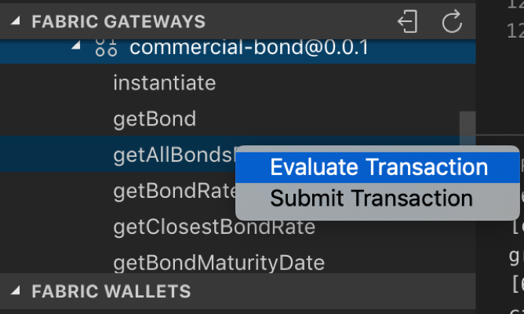
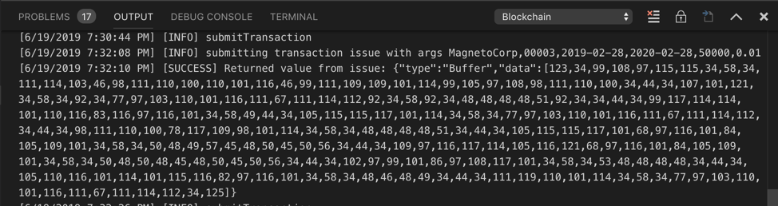
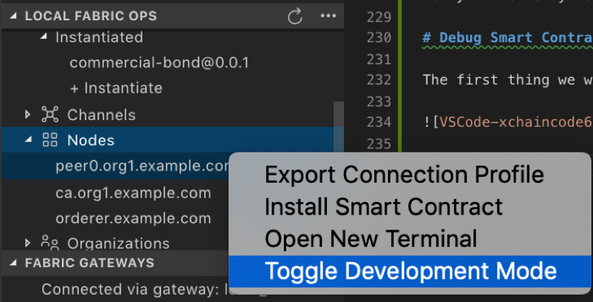
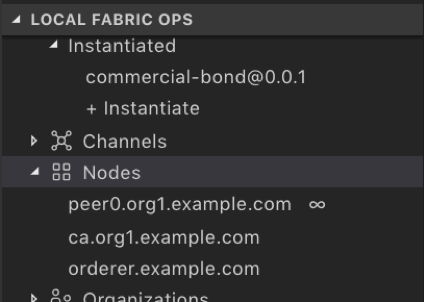
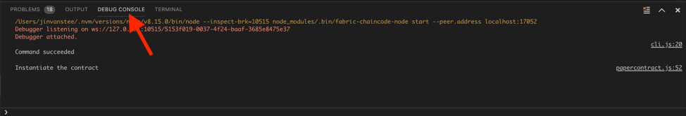
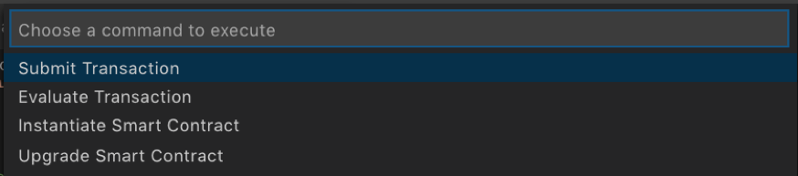

VSCode Lab Part 3 - Cross Chaincode calls
You can use a chaincode to invoke other chaincodes. This allows a chaincode to query and write to data outside of its namespace. A chaincode can both read and update data outside of its namepace by using chaincode that is instantiated on the same channel. However, a chaincode can only query data by using chaincode on different channels.
Chaincode to chaincode interactions can be very useful if you are looking to integrate business logic at the chaincode level or for migration purposes. The goal of this lab is to show you how to code cross chaincode calls in a smart contract. The API that is used for doing this is the invokeChaincode() API from the fabric-shim library’s ChaincodeStub class. The invokeChaincode() API is a lower-level Fabric API that can be invoked through the higher-level Fabric API that you have been using in the previous labs.
Part of the cross chaincode process is to understand how and where you want to code the chaincode to chaincode interaction. In this lab, we add a new smart contract commercial-bond that we want commercial-paper to query. We want to simulate the situation when a commercial-paper is issued, the commercial-paper smart contract queries the commercial-bond contract for current returns on bonds with a similar maturity date, and sets the paper price accordingly. For more details on this particular use case, see the scenario described here: https://hyperledger-fabric.readthedocs.io/en/release-1.4/developapps/chaincodenamespace.html#cross-chaincode-access.
For this lab commercial-bond is already written and packaged up for you. You will clone and add the package to your VSCode IBM Blockchain Platform Extension. Then you will package, install and instantiate the contract to your locally running fabric environment. The instantiate process will also add a few sample bonds to the ledger and to commercial-bond's world state. This way your commercial-paper will have existing bonds to query and extract rates from. You can also experiment with commercial-bond's functions by issuing your own bonds.
The bulk of the lab will be done against the existing commercial-paper. This is where you will add additional functions that interact with the commercial-bond contract. We will also use the VSCode IBM Blockchain Platform Debug Smart Contract function so you get an understanding of how to quickly iterate through changes to a smart contract in development mode and debug a smart contract.
Finally we will deploy the bond-query-enabled commercial-paper to your local fabric, generate some functional tests, and run through them to make sure that the smart contract is functional.
These are the general steps you will take: 1. Clone the commercial-bond smart contract package and add package to VSCode workspace 2. Package commercial-bond, install and instantiate 3. Run a few tests to get familiar with commercial-bond 4. Grab commercial-paper if you don't already have it 5. Setup Debug Smart Contract in Development Mode 6. Make smart contract updates, test in debugging session 7. Make final updates. Package commercial-paper, install and instantiate 8. Generate function tests, and run through function tests 9. The end!
Section 1: Clone the commercial-bond smart contract package
- pen up your terminal and run the following commands from your home directory:
$ git clone https://github.com/jinvanstee/commercial-bond.git
Sample output:
Cloning into 'commercial-bond'...
remote: Enumerating objects: 32, done.
remote: Counting objects: 100% (32/32), done.
remote: Compressing objects: 100% (28/28), done.
remote: Total 32 (delta 3), reused 31 (delta 2), pack-reused 0
Unpacking objects: 100% (32/32), done.
- Return to your VSCode Explorer and add the commercial-bond smart contract folder to your workspace.
Right click anywhere in your workspace to get the drop down and select Add Folder to Workspace. Then browse to <path to commercial-bond>/organization/magnetocorp/ and select contract and click Add.

You should see the contents of the contract folder in your workspace, like the following picture: (Please note that your other folders may look different than the screen shot below, but the contents within the contract folder should be the same)

Section 2: Package commercial-bond, install and instantiate
- In VSCode, open up the Command Palette (either by click on the gear icon to the lower left and selecting Command Palette or pressing
Command + Shift + Pif you are on a Mac andCtl + Shift + Pif you are on Linux).
Select IBM Blockchain Platform: Package a Smart Contract Project:

Then select commercial-bond.

Upon success, you will see in the lower right corner a message like this:

Now you will install this chaincode to your local-fabric. Navigate to the IBM Blockchain Platform view in VSCODE (the 6th button down from the left menu):

Under the Local Fabric Ops panel, click on + Install, then select commercial-bond@0.0.1 from the list:

Upon success, you will see a message similar to the following in the lower right corner of VSCode:

You will also see the package listed under Installed in the Local Fabric Ops panel:

Now you will instantiate the installed contract. In the Local Fabric Ops panel, select + Instantiate. In the pop-up, similar to when you installed the smart contract, select commercial-bond@0.0.1.
Next, type instantiate when it asks you What function do you want to call. Press Enter to continue:

Next, it will ask you what arguments to pass to the function. Just hit Enter here because there aren't arguments here.
Finally, it will ask you to provide a private data collection configuration file. Again, just hit Enter here because private data collection doesn't apply in this case.
First time initialization of Node.js chaincode can take a while because it will need to pull down all the Node dependencies from the npm registry. After a few minutes, upon success, you will see a success message in the lower right corner of VSCode:

Now that you have instantiated commercial-bond on your locally running fabric, you can...
Section 3: Run a few tests to get familiar with commercial-bond
VSCode IBM Blockchain Platform extension makes it easy for you to test out functions of your smart contract directly inside VSCode. Let's run a few tests directly through the functions made visible in the Fabric Gateways panel of the IBM Blockchain Platform view. Click on all the twisties to reveal the functions of commercial-bond:

Scroll down to see all the functions of this smart contract:

All of these functions represent transactions in this smart contract. Now, let's evaluate a few transactions.
Let's start with getAllBondsFromIssuer which will return all the bonds from a specified issuer.
Select the function getAllBondsFromIssuer, and either right-click or Ctl+click and select Evaluate Transaction:

Next, you will see a familar pop-up at the top of VSCode that asks you what are the arguments to the transaction. This transaction only takes one argument, and that is the name of the issuer. Let's type in "MagentoCorp" as follows (important to leave the double quotes):

Next, it will ask you what transient data to pass for the transaction. In this case we have none, so just press Enter to move forward.
Now, in the OUTPUT view, you will see the results of evaluating this transaction. And you will see that there are two bonds issued by MagnetoCorp:

Study the output and you will see other key/value pairs for each bond such as maturityDateTime, issuer, and interestRate.
A quick exercise, what is the interestRate for bondNumber 00002?
Now, let's issue a bond. This time we will submit the transaction so it actually gets committed to the ledger.
In the Fabric Gateways panel, select the issue transaction. Either right-click or Ctl+click and select Submit Transaction.

Next, copy and paste the following inside the brackets when the pop-up asks you what are the arguments to the transaction:
"MagnetoCorp", "00003", "2019-02-28", "2020-02-28", "50000","0.01"

Hit Enter and next you will see the screen that asks you for transient data. Hit Enter here because we don't have any transient data in this case.
Then the transaction will get submitted. Upon success, you will see in the OUTPUT panel the following. Notice the [SUCCESS] message which means the transaction was successfully submitted.

The actual output to the issue command isn't very helpful as it is just a buffer of numbers that represent the bond. Let's re-run the getAllBondsFromIssuer and see if this bond shows up. Use the steps from above to re-run this transaction. Upon success, you will see the following output, and notice that the bond we just added shows up now:

Now, the last transaction for you to test, is the getClosestBondRate transaction. This is the transaction that we will update commcercial-paper to call. This transaction takes two arguments: 1) bondIssuer and 2) compareMaturityDate. And what this transaction will do is iterate through all the bonds issued by the specified bondIssuer until it finds a bond that has a similar maturity date as the one passed through compareMaturityDate, and it will return that bond's interest rate. If it cannot find a bond with a similar maturity date it will return an empty string.
Select getClosestBondRate from the Fabric Gateways panel, and either right-click or Ctl+click and select Evaluate Transaction.

Next you will be asked what arguments to pass. Copy and paste the following inside the brackets:
"MagnetoCorp","2020-02-15"

Hit Enter. Again, you will be asked for transient data and again you will just hit Enter to progress forward to evaluating the transaction.
Upon success, you will see the following output in the OUTPUT panel:

Notice that the interest rate returned is 0.01, which if you recall is the interest rate associated with MagnetoCorp's bondNumber 00003, which has a maturity date of 2020-02-28 which is the same month as the 2nd argument you passed for getClosestBondRate.
Now run the same evaluation but with the following arguments:
"MagnetoCorp","2020-04-30"
What do you get returned? Is it expected? Which bond does the rate belong to?
Lastly, run the same evaluation but with the following arguments:
"MagnetoCorp","2020-05-31"
Now what do you get returned? Is it expected?
Section 4: Get commercial-paper if you don't already have it
If you already have commercial-paper in VSCode from the previous lab, you can skip this section. If not, then follow the steps outlined in the VSCode Part 2 lab, section 2 to clone the fabric-samples repo.
Now you are ready to make updates to the smart contract and test them quickly by working with Hyperledger Fabric in development mode in conjunction with the VSCode Debugger.
Section 5: Setup Debug Smart Contract in Development Mode
The VSCode IBM Blockchain Platform Extension provides an integrated Debug Smart Contract experience with VSCode's build-in debugger. It is a powerful tool in digging deeper into your smart contract code stack, and can be extremely useful in your smart contract development work flow. Using the debug feature will allow you to efficiently test out updates to your smart contract against a local Hyperledger Fabric running in development mode, without having to re-package, re-install and upgrade your smart contract manually with every change. Now, let's get into setting up the debug environment.
The first thing you will do is to Toggle Development Mode on your peer. Navigate to the IBM Blockchain Platform view in your VSCode:
In the Local Fabric Ops panel, scroll down to find Nodes and expand that section. Ctl + select peer0.org1.example.com and select "Toggle Development Mode":

This will take a minute. Upon success you will see the following message in the lower right corner:

You will also see in the Local Fabric Ops panel, under Nodes, a little infinity symbol next to the peer:

Let's return to the VSCode Explorer perspective, and click on papercontract.js to open it.

If you are unfamiliar with commercial-paper, please review what the papercontract.js does in VSCode Lab 2 section 1 and section 3.
Now that we have papercontract.js open, let's navigate to the Debug view in VSCode:

In this view you will see the following panels:

An explanation of each of the panels: 1. Variables - this panel will display all the variables in the current function 2. Watch - you can pick specific variables to watch here, and track them as you step through your code 3. Call Stack - this panel will display the call stack of the current function you are stepping through 4. Breakpoints - this panel will display all the breakpoints in the current program
Now, let's configure a launch.json file for papercontract.js. According to VSCode's debugging documentation: For most debugging scenarios, creating a launch configuration file is beneficial because it allows you to configure and save debugging setup details. VS Code keeps debugging configuration information in a launch.json file located in a .vscode folder in your workspace (project root folder) or in your user settings or workspace settings.
To do so, click on the little arrows next to the DEBUG toolbar at the top of the Debug view.

Now select the name of your paper-contract project folder from the drop down. In the sample picture below the name of the project folder is cp-magnetocorp-contract-javascript:

Next a pop-up window will ask you to select an environment. Because we are dealing with Node.js chaincode, select the option Fabric Smart Contract (Node.js):

This will open a launch.json. It should look like the following:

We will not modify the launch.json file in this case. Save the file with Ctl+S and close it.
Now, let's launch a debug session for papercontract.js.
Click on the little arrows again next to the DEBUG toolbar at the top of the Debug view:
This time select Launch Smart Contract (cp-magnetocorp-contract-javascript). Please note your project folder name may be slightly different so you will your project folder name appear in parenthesis.

Now, click on the green arrow in the DEBUG toolbar to actually launch a debug session:

Give it a few seconds, you will see a new pop-up window at the top of VSCode. Because this is your first time debugging this smart contract, select Yes Create a new debug package and install:

You will see some output stream by in the OUTPUT view at the bottom of VSCode as the debugger packages. You will also see some status messages appear in the lower right corner describing the steps to package and install the development papercontract package. The last message you will see upon success is:

You should also see a little debugging toolbar appear at the top of VSCode, like the following picture. You can see the IBM Blockchain Platform logo at the right of this toolbar. Click on that button:

Click on the IBM Blockchain Platform button will bring up another pop-up menu, select Instantiate Smart Contract from this menu as follows:

Then you will be presented with all the available packages to instantiate, select the one that was just packaged which should have a name similar to the picture below (the name of the package should have the word debug in it followed by the date and time this package was created):

Next you will see a familiar pop-up asking what function you'd like to call. Type in instantiate as follows:

Then you will see another pop-up asking what arguments to pass to the function. You will just hit Enter here:

Lastly, you will be asked if you want to provide a private collection configuration file. Again, just hit Enter here:

Finally, upon successful instantiation, you will see the following message in the lower right corner:

To double check that the debug package was instantiated onto the local Hyperledger Fabric peer, navigate to the IBM Blockchain Platform view in VSCode, and look for the debug smart contract in the Local Fabric Ops panel:

Return to the VSCode Debug view. Now you are setup for developing and debugging the commercial-paper smart contract!
Section 6: Make smart contract updates, test in debugging session
It may seem like a lot of steps to setup the smart contract debugging environment in VSCode, but it is worth spending time up front to configure a debugging session. You will be a more effective smart contract developer with this tool in your toolkit.
- In the VSCode
Debugview, if you look at theDEBUG CONSOLEoutput, you will see all theconsole.logmessages for the functions that have been executed so far. So far we've only instantiated the smart contract, so you will only see the following message in theDEBUG CONSOLE:

And if you look at the papercontract.js code at line 52 you will see the console.log instruction (note that where this code is located in your papercontract.js may be slightly different. If you see the DEBUG CONSOLE output it tells you which line this is from):

- Let's put in a breakpoint and walk through one of the functions. Let's place a breakpoint on the first instruction in the issue function. Your screen should look like the following (you can either click on the space to the left of the line number, or put your cursor on that line and hit the
F9key):

- Now let's execute the
issuetransaction and walk through the debugging process on the currentpapercontract.js. To submit or evaluate a transaction in the debugging environment we will leverage the integrated IBM Blockchain Platform Extension debug functionality. In the debug toolbar, click on the IBM Blockchain Platform button:
A familiar pop-up window will appear at the top, select Submit Transaction:

Then another pop-up window will appear listing all the functions/transactions that are available in papercontract.js for you to test. Let's select issue:

Then, in the pop-up that asks what arguments to pass to the transaction, enter the following inside the brackets:
"MagnetoCorp", "00005", "2020-05-31", "2020-11-30", "500000"

For the next pop-up you will be asked if you want to provide a private collection configuration file. Again, just hit Enter here:
- Now the debugger will automatically stop at the breakpoint you set inside the
issuefunction. And you should see the various debug panels on the left populated with information related to that line of code:

Here you can choose to Step Over that line of code onto the next line, or Step Into the function which will dive into that call stack. If you've used debuggers before these should be familiar to you. The debugger tool-bar at the top has the most commonly used debugging functions:

Hover over each of the buttons to see what each one does. Let's select the Step Over function or you can press F10 to do the same thing.

You will see the now you are at the next line of code, and the variables panel has been updated with the results of executing the previous line of code. Notice that the paper variable has now been updated with the arguments input to the transaction:

Ctl + click on the paper variable and select Add to watch: